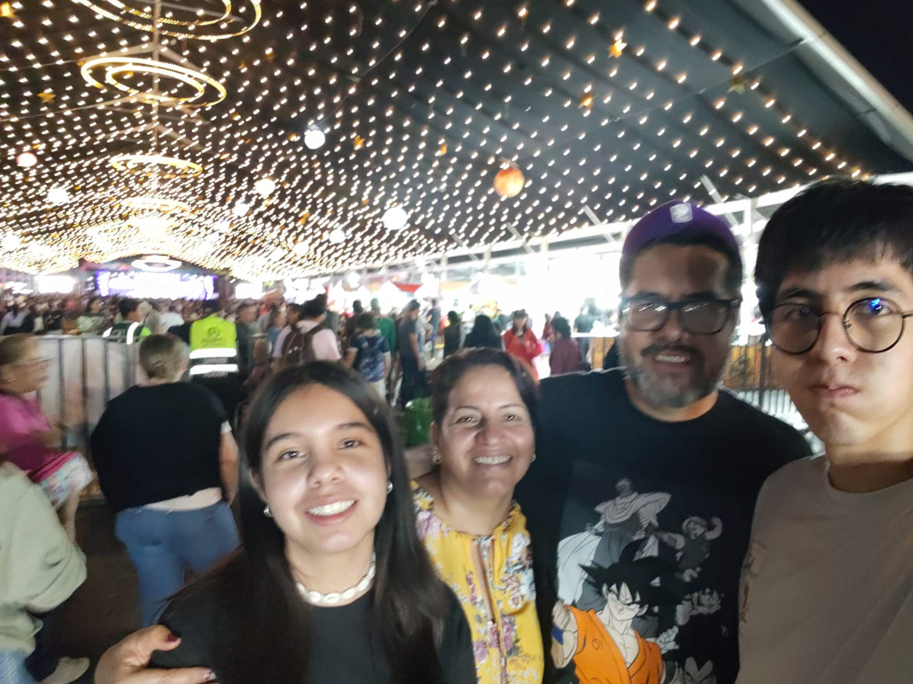

¿Quién soy?
Soy alguien a quien le encantan los videojuegos, animes, musica , practicar voleibol y programaar manteniendo. el equilibrio en mis metas personales y profesionales.
Galería de Hobbies y Momentos
A continuación, algunas imágenes de mis actividades favoritas:

Mis Hobbies y Preferencias
- Practicar deportes como el voleibol.
- Escuchar música variada a través de plataformas digitales.
- Dibujar y crear conceptos visuales originales.
- Jugar videojuegos y analizar su código de programación.
Metas Académicas y Profesionales
- Concluir exitosamente mis estudios universitarios.
- Dominar tecnologías avanzadas de desarrollo web y redes.
- Lograr todo lo que me proponga cueste lo que cueste.
Habilidades Técnicas
| Tecnología / Área | Nivel | Herramientas |
|---|---|---|
| Programación (C / Java) | Intermedio | Code::Blocks, NetBeans |
| Desarrollo Web | En aprendizaje | HTML5, CSS3 |
| Redes | Avanzado (CCNA) | Cisco Packet Tracer |